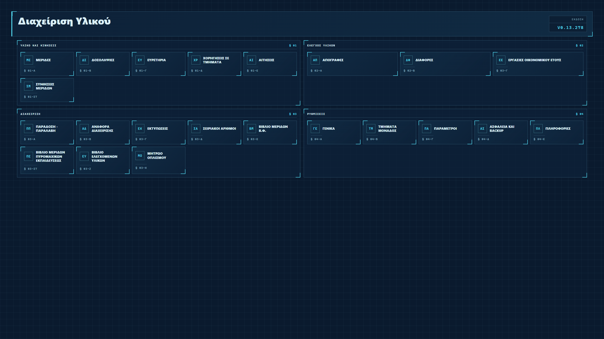
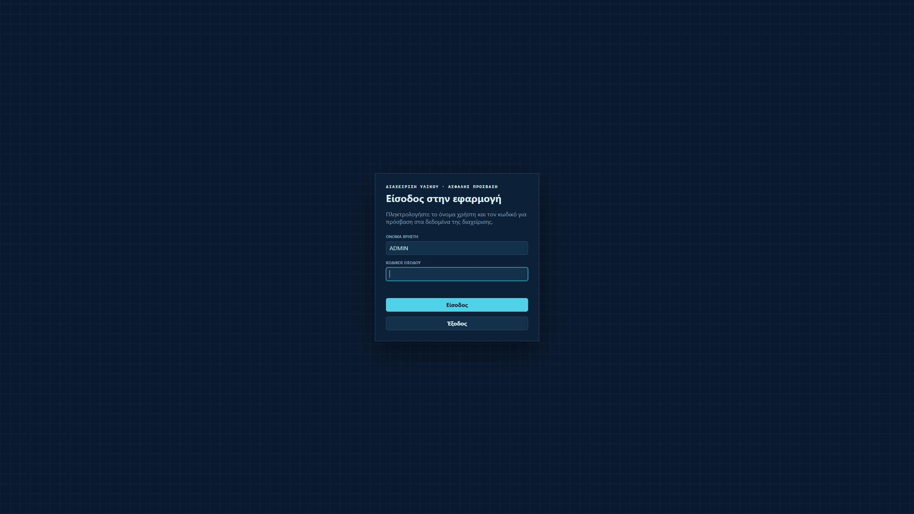
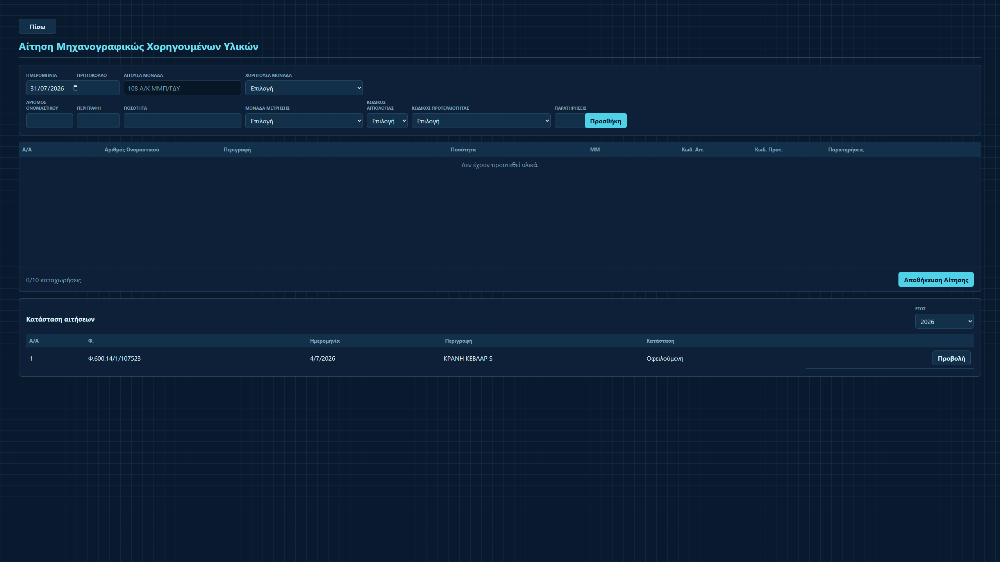
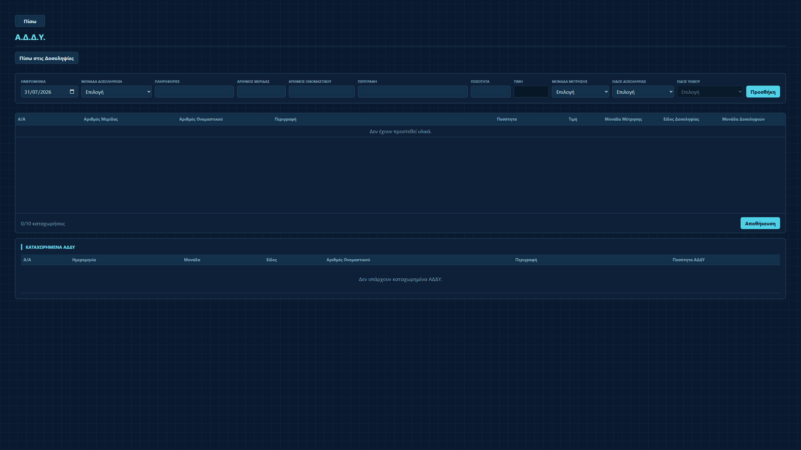

Έλεγχος. Ακρίβεια. Συνέχεια.
Η διαχείριση υλικού,
σε μία εφαρμογή.
Μερίδες, κινήσεις, αιτήσεις, απογραφές, ειδικά βιβλία και επίσημα έντυπα σε ένα ενιαίο περιβάλλον που λειτουργεί πλήρως offline στον υπολογιστή σας.
ΚΕΝΤΡΙΚΗ ΕΙΚΟΝΑ
ΟΕ 2026
Διαχείριση Υλικού
Πρόσφατες κινήσειςΠροβολή όλων
ΜερίδαΠεριγραφήΚίνηση
112Υλικό διαχείρισηςΠίστωση
248Είδος εξοπλισμούΧρέωση
361Αναλώσιμο υλικόΠίστωση
Κίνηση ανά μήνα2026
Αυτόματος έλεγχοςΟι κινήσεις συμφωνούν
Έτοιμο για εκτύπωσηExcel · Word · Έντυπο
01 Χωρίς σύνδεση Internet
02 Ενιαία τοπική βάση
03 Επίσημα έντυπα
04 Backup και επαναφορά
Η εφαρμογή στην πράξη
Καθαρή εικόνα.
Πλήρης έλεγχος.
Δείτε το πραγματικό περιβάλλον της εφαρμογής: από την ασφαλή είσοδο και το κεντρικό μενού έως τις αιτήσεις και τις δοσοληψίες υλικού.

Όλες οι βασικές εργασίες οργανωμένες σε ευδιάκριτες ενότητες.

Ελεγχόμενη είσοδος στο τοπικό περιβάλλον εργασίας.

Καταχώριση, παρακολούθηση και προβολή αιτήσεων σε μία οθόνη.

Οργανωμένη καταχώριση κινήσεων με άμεση εικόνα των εγγραφών.
Επιλέξτε οποιαδήποτε εικόνα για προβολή σε πλήρες μέγεθος.
Πλήρης λειτουργικότητα
Όσα χρειάζεται η Διαχείριση.
Τίποτα περιττό.
Από την πρώτη καταχώριση μέχρι το κλείσιμο του οικονομικού έτους, κάθε εργασία παραμένει συνδεδεμένη με τη σωστή μερίδα και το αντίστοιχο έντυπο.
01
Μερίδες και καρτέλες υλικού
Πλήρης εικόνα υπολοίπων, κινήσεων, συνθέσεων και ιστορικού, με διαχείριση χρεώσεων ανά τμήμα και Μερικό Διαχειριστή.
31-12-2025Απογραφή120
15-02-2026ΕΧΠ-1−20
31-05-2026Χ-37+8
ΑΔΔΥ, ΕΧΠ και κινήσεις
Καταχώριση ΑΔΔΥ, ΕΧΠ, χρεώσεων και πιστώσεων με αυτόματη ενημέρωση καρτελών, ευρετηρίων και φύλλων μεταβολών.
Απογραφές και διαφορές
Ολοκληρωμένες απογραφές, αυτόματος υπολογισμός πλεονασμάτων και ελλειμμάτων και συγκεντρωτικές καταστάσεις.
Αιτήσεις, χορηγήσεις και συνθέσεις
Αιτήσεις και χορηγήσεις υλικών, μαζί με εισαγωγή συνθέσεων από Excel, προβλεπόμενες ποσότητες και αυτόματη ενημέρωση.
05
Μητρώα, ευρετήρια και εκτυπώσεις
Ευρετήρια δοσοληψιών, πρωτοκόλλων και κινήσεων, μητρώα σειριακών αριθμών και οπλισμού, με προεπισκόπηση, εκτύπωση και εξαγωγή σε Excel ή Word.
Εργασίες οικονομικού έτους
Έλεγχοι κινήσεων, αλλαγή αρίθμησης, αρχείο μερίδων, ετήσιες εκτυπώσεις και ασφαλείς εργασίες κλεισίματος οικονομικού έτους.
Ειδικά βιβλία
Βιβλία Μερίδων Β.Φ., Πυρομαχικών Εκπαιδεύσεως και Ελεγχομένων Υλικών, με οργανωμένη παρακολούθηση των αντίστοιχων καρτελών.
Μία καθαρή ροή
Από την κίνηση
στην πλήρη εικόνα.
Κάθε καταχώριση ενημερώνει αυτόματα όλα τα σημεία όπου χρησιμοποιείται η αντίστοιχη μερίδα.
Καταχώριση
Επιλέγετε μερίδα και δημιουργείτε την κίνηση ή την απογραφή.
Αυτόματη ενημέρωση
Υπόλοιπα, τμήματα, συνθέσεις και ευρετήρια ενημερώνονται μαζί.
Έλεγχος και έντυπο
Ελέγχετε τη συνολική εικόνα και εκτυπώνετε το κατάλληλο έντυπο.
Offline-first
Τα δεδομένα σας
μένουν σε εσάς.
Η εφαρμογή λειτουργεί τοπικά χωρίς να απαιτεί μόνιμη σύνδεση στο Internet ή εξωτερική υπηρεσία αποθήκευσης.
- ✓ Τοπική βάση δεδομένων
- ✓ Δημιουργία και επαναφορά backup
- ✓ Έλεγχοι ακεραιότητας και επικύρωση στοιχείων
- ✓ Windows 7 SP1, Windows 10 και Windows 11
- ✓ Εκδόσεις για αρχιτεκτονική x86 και x64
Έτοιμο για εγκατάσταση
Ξεκινήστε με τη
Διαχείριση Υλικού.
Επιλέξτε το λειτουργικό σύστημα και την αρχιτεκτονική του υπολογιστή σας.
Το αρχείο εγκατάστασης παρέχεται μέσω ασφαλούς απευθείας λήψης.
Συχνές ερωτήσεις
Χρήσιμες
πληροφορίες.
Χρειάζεται σύνδεση στο Internet;+
Όχι. Η καθημερινή λειτουργία και η αποθήκευση των δεδομένων γίνονται τοπικά στον υπολογιστή.
Σε ποια λειτουργικά συστήματα εγκαθίσταται;+
Υποστηρίζονται Windows 7 SP1, Windows 10 και Windows 11. Για κάθε λειτουργικό παρέχονται ξεχωριστά αρχεία εγκατάστασης x86 (32-bit) και x64 (64-bit). Όλες οι εκδόσεις της εφαρμογής λειτουργούν offline.
Μπορώ να κρατήσω αντίγραφο ασφαλείας;+
Ναι. Η εφαρμογή διαθέτει λειτουργίες δημιουργίας και επαναφοράς backup της τοπικής βάσης.
Υποστηρίζονται εκτυπώσεις και εξαγωγές;+
Ναι. Τα μητρώα και οι καταστάσεις εκτυπώνονται στον σωστό προσανατολισμό και μπορούν να εξαχθούν σε Excel ή Word όπου διατίθεται η αντίστοιχη ενέργεια.